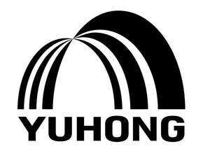

Trade Mark Journal No.2025/009 28 February 2025
UK00004135890 11 December 2024 (1,2,17,19,37)

- Class 1
- Glue for industrial purposes; Gums [adhesives] for industrial purposes; Adhesives for wall tiles; Oil cement [putty]; Pressure sensitive adhesive tapes [sensitised]; Adhesives for wallpaper; Starch paste [adhesive], other than for stationery or household purposes; Unprocessed artificial resins; Epoxy resins, unprocessed; Cement-waterproofing chemicals, except paints; Concrete additives; Unprocessed synthetic resins for use in adhesives; Polyethylene; Adhesive compounds with a base of epoxy resins; Silicones; Plastic adhesives [not for stationery or household purposes]; Plastics in the form of powders, liquids or pastes; Chemical additives for paint; Adhesive compositions for use in industry; Vinyl acetate ethylene copolymer emulsion; Redispersible polymer powder; Unprocessed polyvinyl acetate resins; Concrete additives; Adhesives for industrial use in the form of coatings; Adhesive materials for the building industry; Structural adhesives for building use; Waterproofing membranes in liquid chemical form for use in construction; Tile adhesives.
- Class 2
- Coatings [paints]; Coatings for roofing felt [paints]; Anti-graffiti coatings [paints]; Wood coatings [paints]; Ceramic paints; Fireproof paints; Bitumen varnish; Pigments; Gum resins; Thinners for paints; Primers; Thickeners for paints; Agglutinants for paints; Anti-corrosive bands; Anti-rust oils; Metals in powder form for use in painting, decorating, printing and art; Waterproof coating (paint); Anti-corrosive coatings [paints]; Anti-rust preparations; Additives for use in coatings; Protective coatings for waterproofing surfaces of buildings [paints]; Waterproof coatings [chemical, paints].
- Class 17
- Chemical compositions for sealing leaks; Rubber seals for jars; Sealant compounds for joints; Liquid rubber; Synthetic rubber; Insulating materials; Insulators; Insulating paints; Substances for insulating buildings against moisture; Plastic film, other than for wrapping; Insulating films; Soldering threads of plastic; Padding materials of rubber or plastics; Plastic substances, semi-processed; Plastic fibres, other than for textile use; Adhesive tapes, other than stationery and not for medical or household purposes; Self-adhesive tapes, other than stationery and not for medical or household purposes; Flexible hoses, not of metal; Watering hose; Valves of india-rubber or vulcanized fibre; Joint packings for pipes; Junctions, not of metal, for pipes; Seals for pipe connections; Non-metallic encapsulated seals; Insulating water proofing membranes; Waterproof membranes made of polymers; Silicone sealants; Polyurethane films for use in sealing and insulating buildings; Polymer film for use in manufacture; Elastomeric sealants in the form of extrudable pastes for joints; Chemical compositions for repairing leaks; Silicone rubber sealants; Rubber sealant for caulking and adhesive purposes; Adhesive sealant and caulking compound.
- Class 19
- Water-pipes, not of metal; Water-pipe valves, not of metal or plastic; Geotextile; Tiles, not of metal, for building; Bricks; Cement; Gypsum [building material]; Plaster; Concrete; Roofing, not of metal, incorporating photovoltaic cells; Building materials, not of metal; Mortar for building; Roof coverings, not of metal; Roofing, not of metal; Coatings [building materials]; Bituminous coatings for roofing; Fireproof cement coatings; Road coating materials; Grout; Bituminous products for building; Bitumen paper for building; Refractory construction materials, not of metal; Asphalt; Building panels, not of metal; Reinforcing materials, not of metal, for building; Plastic pipes for plumbing purposes; Coverings, not of metal, for building; Roofing membranes; Bituminous products in the form of membranes for waterproofing; Waterproofing boards (Non-metallic -); Epoxy grout; Polymeric bitumen emulsion for waterproofing buildings; Wall coatings (Cementitious -); Polymeric bitumen emulsions for road surfaces; Cementitious waterproofing coatings; Bituminous products in sheet form for waterproofing roof surfaces; Waterproof coatings [cementitious]; Plaster for use in building; Coloured glitter epoxy grout; Bituminous sealing membranes; PVC roofing membrane.
- Class 37
- Building sealing; Building insulating; Building construction supervision; Providing construction information; Damp-proofing [building]; Cleaning of buildings [interior]; Painting, interior and exterior; Demolition of buildings; Construction consultancy; Factory construction; Rustproofing; Varnishing; Asphalting; Assembly of prefabricated houses; Plastering; Plumbing; Roofing services; Sanding; Maintenance and repair of upholstery; Upholstering; Pipeline construction and maintenance; Installation of pipelines; Buildings (Waterproofing of -) during construction; Installation and maintenance of photovoltaic installations; Maintenance and repair of buildings; Building construction.
BEIJING ORIENTAL YUHONG WATERPROOF TECHNOLOGY CO., LTD.
Representative: Handsome I.P. Ltd